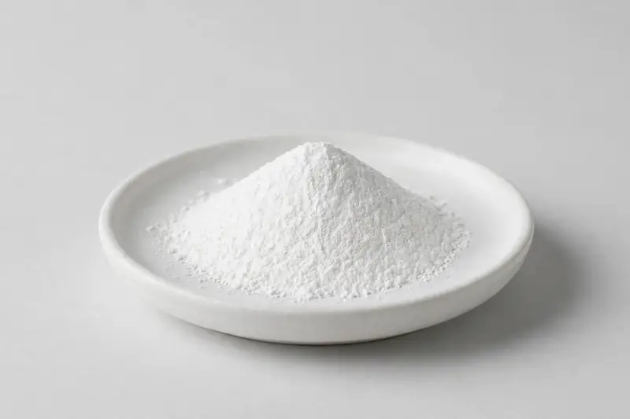

Magnesium bisglycinate — chelated mineral powder positioned for sleep, calm and daily mineral formulations.

Overview
Magnesium glycinate is the chelate of magnesium with glycine, supplied as a white, free-flowing powder and specified by elemental magnesium content. Supplement brands request it for sleep- and calm-positioned capsules, stick packs and drink mixes because the chelated form is well tolerated and mixes cleanly. From Xi'an we trade this material through vetted partner producers, matching each buyer's required elemental magnesium range and presentation.
Specifications below reflect commonly requested options in the market — not a stock list. Share your target spec and we'll confirm exactly what we can supply, honestly.
| Specification | Details |
|---|---|
| Botanical identity | Magnesium bisglycinate chelate, powder |
| Marker compound | Elemental magnesium — commonly requested: 10-18% (titration, expressed as Mg) |
| Appearance | White to off-white fine powder |
| Analytical methods | Methods referenced in buyer specifications: titration |
| Mesh size | Typically 80–100 mesh (confirm per inquiry) |
| Testing | COA/TDS arranged on request; scope agreed per your spec |
Applications
Documentation
We don't claim in-house labs or certifications we don't hold. COA and TDS documents can be arranged on request, and testing scope is agreed against your specification before supply.
FAQ
Related products
Zingiber officinale
Key marker: Gingerols
View specs →Piper nigrum
Key marker: Piperine
View specs →Boswellia serrata
Key marker: Boswellic Acids / AKBA
View specs →Adansonia digitata
Key marker: Whole pulp
View specs →Ribes nigrum
Key marker: Anthocyanins 10-25%
View specs →Send your target spec and volumes — we'll respond with a tailored quotation.
Request a Quote